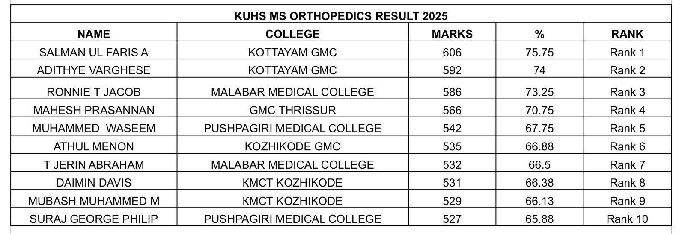
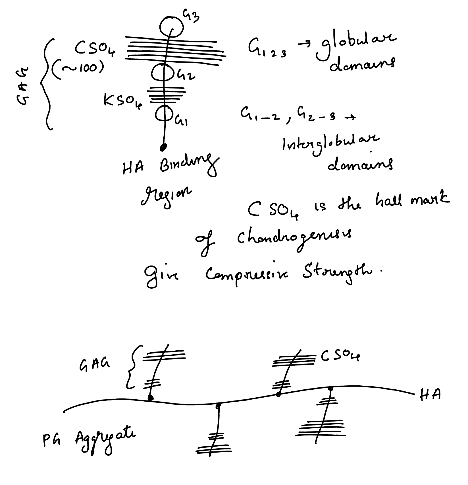

Passing MS Orthopaedics somehow
….is not the real goal
…whether it is with a rank or without

Scan this

Before diving into the topic, I have 4 bitter slides to show
Remember……
There is no such thing as a free lunch in this world.
If someone gives you something for free,
you are the product
Spoiled by professional education
At some point, some even lose the ability to ask questions—even basic ones like, “Do you think I’m a prostitute?”
Time, 2nd order thinking and Effect horizon: Animal ➤ MAN
Learn to
Doing less stuff: Tinder, Bubble, BGMI, Whatsapp, Insta…
Making less decisions: Argue for an hour about what to eat or which clothes to buy.
Making decisions that avoid future repeated decision making
Reducing surface area
Keyword is SACRIFICE
Long case for MS orthopaedics examination
Hip speaks for itself
What will be your long case?
What will be your diagnosis in your hip case?
Osteoartritis (>50% probability)
Should you learn Osteoarthritis Hip?
Why arthritis?
Two clinical signs that cling the diagnosis
Define Osteoarthritis
It is a mechanically driven but biologically mediated complex degenerative disease of a synovial joint starting at the tangential zone of the articular cartilage.

X Ray findings-LOSS
The classic radiographic features of OA are:
• Loss of joint space.
• Osteophyte formation.
• Subchondral sclerosis.
• Subchondral cysts.
What is osteophyte?
Enlarging bony protrusion due to endochondral ossification of chondrocytes arising from periosteal cells.
- Attempt to stabilise the joint.
Seen at margins of weight bearing areas.
Grows in the path of least resistance, guided by synovium.
TGF𝛽 and BMP2 are implicated in the pathogenesis
Any classification you know?
The Kellgren-Lawrence (KL) Classification is a grading system used to assess the severity of osteoarthritis.
Kellgren-Lawrence Grading System for Osteoarthritis
Grade 1 (Doubtful OA)
- Doudtful osteophytosis.
Grade 2 (Mild OA)
- Definite osteophytosis.
Grade 3 (Moderate OA)
- Definite JSN.
Grade 4 (Severe OA)
- Deformity.
In OA, fluid dry up, right?
Changes to Articular Cartilage with Age and Osteoarthritis
| Water content |
Decreases |
Increases |
| Synthetic activity |
Decreases |
Increases |
| Collagen content |
Decreases |
Decreases (concentration increases) |
| Proteoglycan content |
Decreases |
Decreases |
| Chondrocyte Size |
Increases |
- |
| Chondrocyte number |
Decreases |
- |
| Chondroitin: Keratin ratio |
Decreases |
Increases |
| Stiffness (Young’s modulus) |
Increases |
Decreases (high water content) |
What is the bio-mechanical consequence?
Single buzz word is: Bulk Modulus
The resistance to compressive force is reduced, causing failure of load bearing function.
What can you do for him?
Reduce the JRF through the hip
Hip FBD

Abductor moment = body moment in equilibrium
Fd = w x 5d
F = 5w
*w is generally taken as 5/6 of the body weight as the person is standing on one leg. Weight of one leg is generally taken a 1/6 body weight.
*F is the abductor force of contraction.
JRF

How to reduce JRF in hip?
Carry weight on same side!

F x d + F’ x 2d = w x 5d
F + F’ = 5w
F = 5w - F’
So the abductor force of contraction required is reduced from F to F-2F’
How to reduce JRF in hip?
Carry stick on the opposite side!

Pressing the stick on to the ground will produce an equal and opposite ground reaction force, s.
F x d = w x 5d - s x 10d
F = 5w - 10s
So the abductor force of contraction required is reduced from F to F-10s
Any regenerative treatment options?
Tell me more about the first three
Aggrecan and PG Aggregate
PG Aggregate
Aggrecans self assemble on HA filament to form a supra molecular structure called PG aggregate.
- Repels water (Eletrostatic repulsion)
None (HA, CSO4 , Glucosamine) are clinically proven nor recommended by any of the treatment guidelines.
Glucosamine, C SO4, HA

Any other options?
My patient needs a painless, stable and mobile hip
Suppose he want only painless and stable hip, what will you offer?
Indications
- Young unilateral osteoarthritis (OA) patients
- Heavy manual laborers
- Preserves bone stock
- Provides indefinite pain relief
- Allows an active lifestyle
Prerequisites
- Normal contralateral hip (C/L)
- Normal ipsilateral knee (I/L)
- Normal spine function
Disadvantages
- Immobile joint
- Leg Length Discrepancy (LLD)
- Pain in adjacent joints due to altered biomechanics
Techniques
- Intra-articular (I/A)
- Extra-articular (E/A)
- Combined approach
Fusion Position (FADER)
- Flexion: 30°
- Adduction: 5°
- External Rotation: 5°
Primary THA
- History
- Introduce
- Permission
Case History of Hip
- Pain
- SLID
- Allergy
- Medical
- Social
- Summary
- Expectation
Pain-ODP
- Where is the pain?
- Does it come down to the thigh or leg?
- How would you describe the pain?
- Mild, moderate, or severe?
- Do you limp while walking?
- How far can you walk before pain stops you?
- Do you have trouble walking upstairs?
- Do you have trouble washing and drying yourself?
- Do you have trouble putting on socks?
- Does it affect your work or hobbies?
- Any other pain?
SLID
- Has your hip become stiff?
- Limping since childhood?
- Symptoms of infection?
- Discharging wound or scars?
History Continued
- Allergy
- Past medical history: DM, hip surgeries, blood thinners, steroids
- Social: Work, limitations, smoking, alcohol
- Summary for the patient
- What are your expectations?
Examination
- Stand and inspect front, side, and back
- Walk
- Trendelenberg test
- Palpate ASIS, TR, Pulse
- Thomas test and ROM
- LLD measurement
- Special tests
- Spine/Pulse assessment
Indications
- Severe disabling pain unresponsive to conservative measures, affecting ADL
- Medically fit
- No active infection
Surgical Goals
- Relieve pain
- Improve function
Technical Goals
- Correct limb length
- Correct offset
- Restore hip CoR
- Correct positioning of implant
- Position primary arc range within the functional range required by the patient
Contraindications
- Infection
- Neuropathy
- Vasculopathy
- Psychiatric illness
- Obesity
Complications
- Common (2-5%): DVT, Dislocation, Aseptic loosening
- Less common (1-2%): Infection
- Rare (<1%): LLD, Periprosthetic fracture, PE and death, Sciatic nerve palsy
Consent
- Goals
- Reported success rate: 14-year revision rate is 7.27%
- Cemented: 4.88%
- Uncemented: 8.94%
- Hybrid: 5.38%
- Complications
- Alternatives
- Shared decision-making
Implant Fixation & Bearing Surface
- Most common construct: Cemented MoP, 4.87% revision in 14 years
- 75 years: All bearing surface combinations (except MoM) perform similarly
- <55 years: CoP shows better results (<4%) compared to MoP (8-10%)
THA of Choice
- Cemented Exeter Hip: Long-term performance, ODEP rating A* at 10 years
- Ceramic Femoral Head with 1st or 2nd gen XLPE
- <55 years: Discuss uncemented THA option
Cemented THA
- Immediate solid fixation
- Proven, durable
- Low failure rate
- Meets NICE guidelines
- Cheaper, easier to revise
Why Not Uncemented?
- Dorr C femur
- Elderly
- Pathological bone
- Stress shielding, thigh pain
- Difficult to revise
Cement Fixation
- Microinterlock with bone
- Cement fatigues with cyclical loading
- No remodeling
- Two interfaces: Cement-Bone, Cement-Implant
Design Principles
- Composite beam (shape closed) Charnley, Stanmore
- Taper slip (Force closed) Exeter
Composite Beam
- Rough surface
- Collared
- Rigid stem, no movement
- Stem acts as rod in 2 tubes
- Stability by friction
Charnley
- Matt
- 22 mm head
- Cobra flange to resist subsidence
- Flat back changed to round back for fatigue strength
- AP flange for cement pressurisation
Exeter Taper slip
- Polished
- Collarless
- Designed to subside in cement
- Centraliser void prevent cement fracture
- Hoop stress generated, producing radial compression
Centraliser
- Helps stem subsidence
- Seals effective joint space
- Better cement mantle
- Reduce cement cracking by decreasing tensile forces
Cement
- Content, property and uses
- Generations
Cement Generations
| Mixing |
Bowl |
Bowl |
Vacuum |
Vacuum |
| Gun |
No |
Yes |
Yes |
Yes |
| Restricter |
No |
Yes |
Yes |
Yes |
| Pulse lavage |
No |
No |
Yes |
Yes |
| Pressurisation |
No |
No |
Yes |
Yes |
| Centraliser |
No |
No |
No |
Yes |
| Mantle |
No |
Yes |
Yes |
Yes |
| C quality |
No |
No |
Yes |
Yes |
| Stem position |
No |
No |
No |
Yes |
Strength Factors
| Moisture |
Blood and tissue |
Antibiotic |
| Aging |
Stress raisers |
Vacuum |
| Fatigue |
|
Pressurisation |
|
|
Mixing speed |
|
|
Radioopaque filler |
Radiology (Barrack et al. 1992)
- Grade A: Complete “white out” at bone-cement interface
- Grade B: Slight radiolucency
- Grade C: 50-99% radiolucency or defective mantle
- Grade D: 100% radiolucency or uncovered stem tip
Gruen Modes of Failure
| Ia |
Pistoning: stem within cement |
| Ib |
Pistoning: stem within bone |
| II |
Medial midstem pivot |
| III |
Calcar pivot |
| IV |
Bending cantilever (fatigue) |
Cement Mantle Fracture Causes
- Stress exceeding endurance limit
Reduced by:
- Optimal thickness (2-5mm)
- Symmetric mantle
- Homogeneous cement
Achieving Optimal Cement Mantle
- Avoid stem malalignment
- Preserve 2-3mm proximal medial cancellous bone
- Use stem centraliser
- Improve cement quality
- Better cementing techniques
Uncemented THA Principle
Dynamic biological fixation with lifelong bond between bone and implant.
Methods:
- Bone ingrowth (porous coating)
- Bone ongrowth (grit-blasted/plasma-sprayed surface)
Ingrowth: Rule of 50
- Pore size: 50µm
- Pore depth: 50
- Porosity: 50%
- Gap: 50µm
- Micromotion: 50µm
- Press fit: 1-2mm larger implant
- Line to line: require additional fixation initially Scratich/frictional
Stem Sinkage Factors
- Undersized stem
- Poor bone stock
- High BMI
Femoral Component Stability
- Stable: No migration + spot welds
- Stable fibrous ingrowth: No migration + sclerotic lines
- Unstable: Progressive subsidence + cortical thickening
Ongrowth
- Initial press fit
- Bone grows onto divots
- Titanium implants
- Hydroxyapatite coating (50µm)
Ceramic
- Inorganic material made up of combination of metallic and non metallic elements bonded ionically in high oxidised state
Advantage and Distadvantage
| Hard |
Catastrophic failure |
| Low co of friction |
No plastic deformation |
| Wettable |
Squeaking |
| Biocompatable |
Less range of size |
| Bioinert |
cost |
| No corrosion |
|
| no ion release |
|
Manufacture-Sintering
- Made in to slurry of ceramic powder and water
- Pressed mechanically
- Grinding and polishing using diamond wheel
- Stress testing
Generations
- 1st: 13% fracture
- 2nd: 5%
- 3rd: Delta alumina : 0.18%
- 4th gen Biolax Delta: 0.003%
Biolax Delta
- Composition
- 1st toughening: Transformational toughening
- Z particles act like airbags
- 2nd toughening: Platelet like crystals
Revision
- Once ceramic, always ceramic
- Revise all
Liner failure
- Liner fracture
- Incomplete sitting
- Peripheral chipping
- Morse taper
- Cup deformation
- Inaccurate cup position
- Edge loading: Microseperation
- Medialised cup
- Stem subsidence
- Impingement
- Head size over 36mm: Positive offset
Stripe line
- Area of roughness created on cup and head due to repeated subclinical subluxation.
- Due to increased lever range
- Reduced by reducing lever range by
- Better design
- Positioning and offset
Polyethylene
- Long chain polymer of ethylene monomer (C2H4)
- Mol wt: 2-5 x 10(^6)
- Viscoelastic and undergo strain hardening
- Used as bearing surface
Wear properties
- Manufacture
- Ram bar
- Direct compression moulding
- Ca stearate
- Sterilisation
- Gamma radiation in presence of air: Chain scission
- Storage:
- Long shelf life lead to oxidation
- Package: air leaking
Highly cross linked PE
- High dose radiation induce cross linking
- Better wear property
- More brittle
- Hard
- Stiff
- Reduced UTS
- reduced work hardening
2nd Gen XPE
- Vit E treatment
- Post production anniling
Modes of failure
- Aseptic loosening
- Dislocation
- Fracture
- Liner failure
- Edge loading
- Squeaking
HO
- 43%, 9% high grade brooker
- Patient factors
- An Sp
- Pagets
- Post trauma
- DISH
- Surgical factors
- Muscle ischemia
- Lateral approach
- Bone trauma
- Bone debris
HO Prophylaxis
- Indomethacin 75 mg 6 weeks
- Single peri op RT 700cGy (4hr before to 72 hrs after)
- Combined RT and indo
Take home message
Remember: If someone gives you something for free,
you are the product
Back to knotes